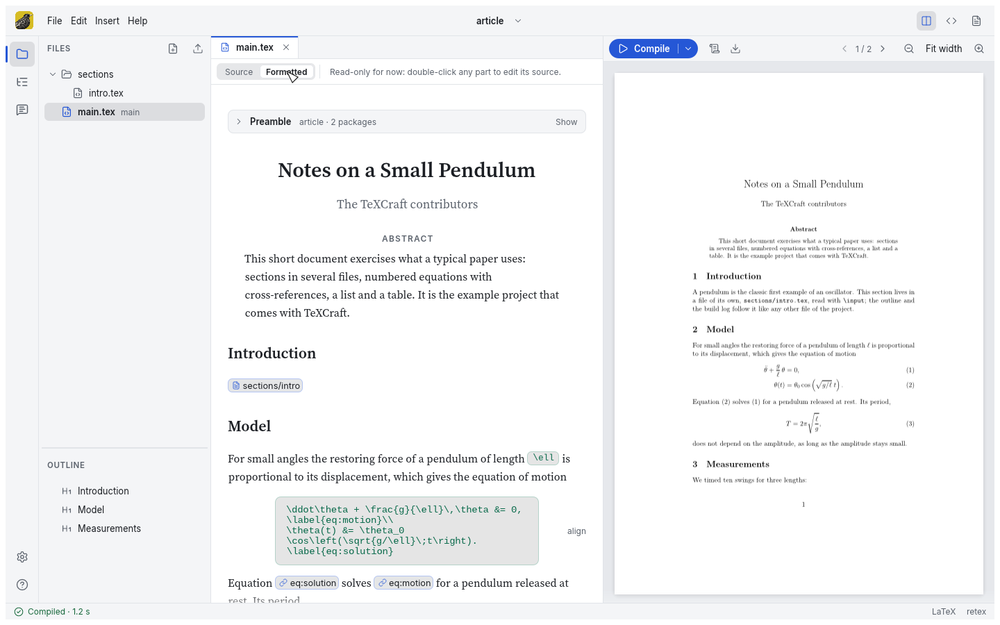

Writing
TeXCraft has its own source editor, made for LaTeX, and a formatted view that shows a file as a document. Both edit the same text.
The source editor
The editor highlights LaTeX, numbers the lines and marks the lines with errors and warnings from the last build. It understands the document as it is built, so it can help:
- Completion
- As you type, the editor offers labels inside
\ref{…}, and the commands, environments and citation keys of your document once it has been built. Ctrl+Space asks for completions at the caret. - Errors and quick fixes
- An error is underlined on its exact span. Hover it to read the engine's explanation. Edit › Quick Fix (Ctrl+.) lists the fixes the engine offers there, such as adding the
\usepackagea command needs; Up and Down choose, Enter applies. - Go to definition
- F12 on a reference or a command goes to where it is defined.
- Closing brackets and environments
- Typing
(,[or{adds the closing one, and\begin{…}its\end{…}. Turn it off in Settings › Editor. - Undo
- Ctrl+Z and Ctrl+Shift+Z, in steps of what you typed. Undo takes back only your own changes: a change made to the file outside TeXCraft stays.
A right-click in the text (or Shift+F10, or the Menu key) opens a menu with Cut, Copy, Paste, Select All, Add a Comment on a selection, Quick Fix and Show in PDF, plus the spellings of a misspelled word and, with a model connected, Rewrite with AI.
On Linux, selecting text also sets the primary selection, and a middle click pastes it where you click.
The Insert menu and the toolbar
The editor's toolbar and the Insert menu add the usual markup around the selection or at the caret: Section, Subsection, Subsubsection, Paragraph Heading, Bold (Ctrl+B), Italic (Ctrl+I), Figure, Table, Inline Formula (Ctrl+Shift+M), Displayed Formula, Numbered Equation, Symbols…, Cross-Reference, Citation, Link, Bulleted List and Numbered List. When the toolbar is narrow, the buttons that do not fit go into its More formatting menu.
To place an image, drag it from the project's files onto the source: TeXCraft writes the \includegraphics line there. The image's menu in the file tree has Insert in Document too. If the main document does not load graphicx, the status line says so.
The formatted view
The Source / Formatted switch above the editor shows a .tex file as a document: headings in a serif face, bold and italic text, lists, the abstract, figure cards with their images, chips for references and citations, and typographic quotes and dashes. The preamble is folded into one bar. Anything the view does not know yet is shown as its source, and says so.

Editing in the formatted view
- Type, delete and paste in paragraphs, headings, list items and captions. What you type is escaped, so a
%or&stays a character. - Enter ends a paragraph, or starts a new item in a list.
- Bold, Italic, the headings and the lists of the Insert menu (and their shortcuts) act on the selection.
- A chip, a formula or a part shown as source is one unit: Backspace or Delete next to it selects it, a second press deletes it. Double-click it to edit its source.
- Each change is a small edit of the source, and undo is shared with the source view.
On the desktop, formulas are typeset by the engine with your document's own preamble, in the colour of the text; a formula with an error is underlined with the message. Desktop only In the browser, formulas show as their source.
Not yet: editing a formula in place (double-click to edit its source instead), the input method's composing text in other scripts (only the committed text shows), leaving a list from an empty item, and suggesting changes from the formatted view (in Suggest mode the view is read-only; suggest in the source). The view's toolbar still shows an older hint, "Read-only for now"; the view is editable as described here.
Tables
A tabular shows as a grid. Click a cell and type; Tab and the arrow keys move between cells. The table's toolbar adds a Row above, Row below, Column left or Column right, deletes a row or a column, sets a column's alignment (Left, Center, Right) and the rules: No borders, All borders or Booktabs rules (which need the booktabs package; TeXCraft tells you if the preamble lacks it). Escape in a cell moves to the toolbar, and Escape again back to the text.
A table the grid cannot show faithfully (cells spanning rows, a cell holding another table, and so on) stays as source, with the reason.
Not yet: merging and splitting cells, the caption's position, tabularx and longtable.
Figures
A figure's card has Edit Figure…: a dialog for the image (from the project's files), its width, the placement, the caption and the label. On the desktop, an image file dropped on the formatted view becomes a new figure. Desktop only
Symbols
Insert › Symbols…, or the Symbols button (Ω) on the toolbar, opens a palette of mathematical symbols, searchable by name or by command. A symbol goes in as a formula, or into the formula the caret is in. If it needs a package, the palette says which, and so does the status line once it is inserted. The symbols you used last are listed first.
Spelling
Misspelled words are underlined as you type. Commands, their keys and labels, formulas, code and verbatim text are skipped; the text after % is checked only if you ask for it in Settings › Editor.
- The language is the document's, as set by
babelorpolyglossia, unless you choose one in Settings. English is always available. On the desktop, other languages work once their Hunspell dictionary (.affand.dicfiles) is installed on your system; without one, TeXCraft says which to install rather than checking against another language. - Right-click a misspelled word for its spellings, Add to Dictionary (your own word list, kept with your settings) and Ignore (until TeXCraft closes).
- Edit › Next Misspelling (F7) goes to the next one.
- A project can carry its own words in
.texcraft/words.txt, one per line, shared with everyone who has the project.
Finding and replacing
- In the file
- Edit › Find (Ctrl+F) opens the find bar; Edit › Replace (Ctrl+Alt+F) opens it with the replace field. Options: Match Case, Whole Word, Regular Expression and In Selection. Replace All is one step to undo.
- In the whole project
- Edit › Find in Project (Ctrl+Shift+F) opens the Search section of the side panel, with the same options. Results are grouped by file; click one to go there. Replace All asks first and says how many matches in how many files; in a file open in the editor, Undo takes back its replacements in one step.
- Going somewhere
- Edit › Go to Line… (Ctrl+Alt+G) and Edit › Go to File… (Ctrl+P), a list of the project's files filtered as you type, with the recent ones first. The Outline lists the sections of the file shown.
Folding
Sections, environments and the preamble can be folded from the marker in the gutter, or with Edit › Fold (Ctrl+Shift+[) and Unfold (Ctrl+Shift+]) at the caret, and Fold All and Unfold All (add Alt). A folded region keeps its first line with a "…" chip, and opens again when the caret lands inside it.
Several carets
Alt+click adds a caret (or removes one). Ctrl+D selects the word at the caret, then adds the next occurrence of the selection each time you press it. Typing, Backspace, Delete, Enter, Tab, the arrows, Home and End act at every caret, and one Undo takes the edit back everywhere. Escape returns to one caret.
Not yet: other commands act at the first caret only, and several carets are not available in Vim mode.
Vim mode
Choose Vim under Editor key bindings in Settings › Editor (or Settings › Keyboard). The mode shows in the status bar.
- Modes: Normal, Insert, Visual and Visual line, with counts, motions, operators, registers, marks, macros, search with /, ?, n and N, and
.to repeat. - Text objects for LaTeX, besides the usual words, brackets and quotes:
ie/aean environment,i$/a$inline math,ic/aca command's argument (or the whole command). - Folding with
zc,zo,za,zMandzR. - Commands:
:w(save, which also compiles),:wa,:q,:wqor:x,:e,:sand:%swith flags,:d,:y,:j,:u,:red,:norm,:noh,:set ic,scsandhls(and theirnoforms), and TeXCraft's own:comment(comment on the selection) and:suggest/:nosuggest(Suggest mode). - Vim's own Ctrl keys stay with Vim; the window's other shortcuts, such as Ctrl+S, still work. A selection made in Visual mode or with the mouse can be commented on, as in the standard bindings.
- The formatted view always uses the standard keys, and says so.
Not yet: Visual block mode, =, back-references in search patterns, case changes in replacements, and :s with confirmation. Each says it is not supported rather than doing something else.